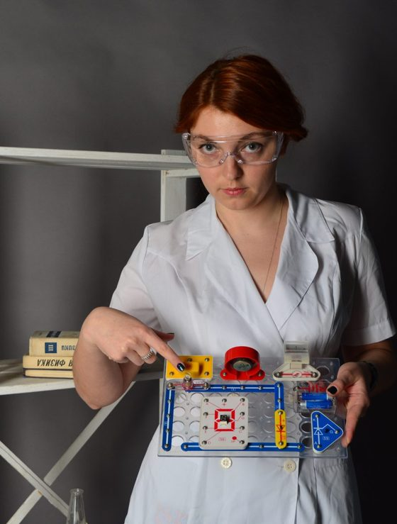
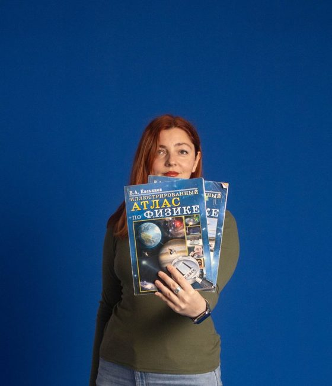
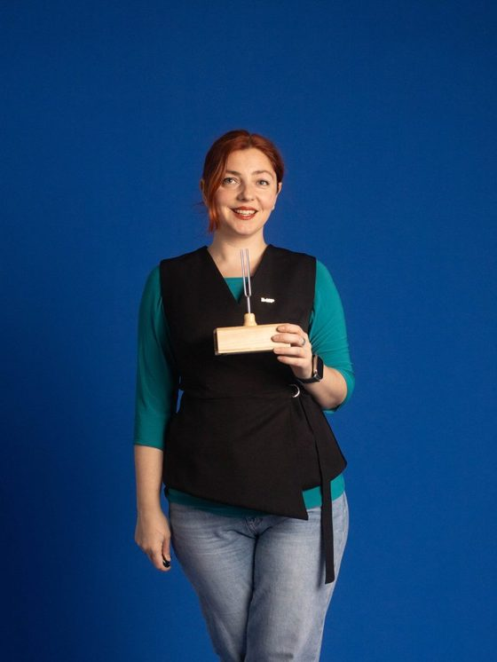

Коротко
Кубракова Екатерина Сергеевна — репетитор по физике и информатике, кандидат физико-математических наук, педагог высшей категории. Готовит к ЕГЭ и ОГЭ онлайн индивидуально и в мини-группах с 2012 года. Результаты учеников на ЕГЭ по физике — от 60 до 96 баллов.
Обновлено:
Обо мне — кто такая Екатерина Кубракова
Я репетитор по физике и информатике (с 2012 года) и школьный учитель, педагог высшей квалификационной категории. Кандидат физико-математических наук (физика конденсированного состояния).
Преподавала в школе, колледже и университете, записывала видеолекции для программ повышения квалификации учителей. В 2026 году прошла подготовку экспертов региональной предметной комиссии ОГЭ в ФИПИ — знаю требования к оформлению и критерии оценивания решений.

Что готовлю
| Экзамен | Предмет | Формат |
|---|---|---|
| ЕГЭ | Физика | Онлайн: индивидуально или мини-группа 3–5 человек |
| ОГЭ | Физика | Онлайн: индивидуально или мини-группа 3–5 человек |
| ОГЭ | Информатика | Онлайн: индивидуально или мини-группа 3–5 человек |
Результаты учеников ЕГЭ и ОГЭ
Каждый год помогаю 20–30 ученикам подготовиться к ЕГЭ и ОГЭ по физике, информатике и математике.
- ОГЭ по физике мои ученики сдают на 4 и 5;
- ЕГЭ по физике — от 60 до 96 баллов: результат зависит от начального уровня и времени на подготовку.
Как проходят занятия
- Входное тестирование и личный план подготовки для каждого ученика.
- Мини-группы по 3–5 человек: на занятии каждый работает в своём темпе и по своим заданиям. Возможны и индивидуальные занятия.
- Нет долгих и нудных лекций: 90% времени — практика решения задач от простых к сложным с опорными конспектами.
- Проверяю работу каждого ученика отдельно.
- Работа ведётся на специальной учебной платформе: там наглядно виден прогресс ученика и количество выполненных домашних заданий, хранятся все материалы — видео, конспекты, задачи. На платформе подключён ИИ-помощник, который подсказывает и направляет ученика при выполнении ДЗ.
Плюсы мини-группы: учиться интереснее и азартнее, а стоимость занятия более чем в 2 раза ниже, чем у индивидуального.


Онлайн-формат
Занимаемся дистанционно: вебинарная комната, виртуальная доска, онлайн-класс, формы опроса и трекер прогресса.
- не нужно тратить время на дорогу;
- наглядно — анимации и интерактивные модели;
- запись урока, рисунки, решения и конспекты всегда под рукой.
Попробуйте сами
Бесплатные материалы для подготовки — можно открыть прямо сейчас
Отзывы учеников и родителей
«Теперь у нас железная 5 по физике»
Отличный специалист, быстро и очень доступно объясняет предмет. Замечательный подход к ребёнку, дочка очень довольна. За одно занятие может запросто объяснить несколько тем! Очень рекомендую.
«Дочка внезапно полюбила физику»
Екатерина Сергеевна, спасибо, вы супер! Теперь жду успешной сдачи ОГЭ :)
«Знаю то, что в школе не дают»
Преподаватель очень нравится, всё объясняет очень доступно, легко. Быстро научился решать задачи, теперь умею решать задания из ЕГЭ. Даёт много полезного материала и всяких лайфхаков.
«Вместе находим ошибки и исправляем их»
Готовилась с Екатериной Сергеевной месяц к ОГЭ по информатике. Всё объясняется доступным языком. Задаются небольшие домашние работы на закрепление материала. Очень понравилось, рекомендую!
«Появилась уверенность в себе»
Дочка с физикой «не дружит», но после занятий с Екатериной Сергеевной стала разбираться в пройденных темах. Екатерина Сергеевна умеет хорошо донести материал. Мы очень довольны результатами.
«Всё настроено на сдачу экзамена»
9 класс, сдаём физику ОГЭ. Екатерина Сергеевна прекрасно даёт материал — прорешивание задач и подача материала. Чувствуется опыт работы с подростками. Ребёнок с удовольствием занимается и всё понимает.
Скриншоты отзывов
Нажмите на отзыв, чтобы открыть его крупнее.
Мои каналы
Частые вопросы
Кто такая Екатерина Кубракова?
Кубракова Екатерина Сергеевна — репетитор по физике и информатике и школьный учитель, педагог высшей квалификационной категории, кандидат физико-математических наук (физика конденсированного состояния). Занимается репетиторством с 2012 года, в 2026 году прошла подготовку экспертов региональной предметной комиссии ОГЭ в ФИПИ.
Как проходят занятия по физике онлайн?
Занятия проходят дистанционно: вебинарная комната, виртуальная доска, онлайн-класс, формы опроса и трекер прогресса. Подготовка начинается с входного тестирования и личного плана, 90% времени занятия — практика решения задач от простых к сложным. Домашние задания и материалы хранятся на учебной платформе с ИИ-помощником, который направляет ученика при выполнении ДЗ.
Какие результаты у учеников на ЕГЭ и ОГЭ?
ЕГЭ по физике ученики сдают от 60 до 96 баллов — результат зависит от начального уровня и времени на подготовку. ОГЭ по физике ученики сдают на 4 и 5. Каждый год к экзаменам готовятся 20–30 учеников.
Чем мини-группа отличается от индивидуальных занятий?
В мини-группе 3–5 человек, на занятии каждый работает в своём темпе и по своим заданиям, а работу каждого ученика Екатерина Сергеевна проверяет отдельно. Учиться в группе интереснее и азартнее, а стоимость занятия более чем в 2 раза ниже, чем у индивидуального.
Как записаться на занятие?
Напишите в Telegram (@KubrakovaES) или в MAX, в каком вы классе и к какому экзамену готовитесь. Екатерина Сергеевна подберёт формат занятий и составит план подготовки.

Записаться на занятие
Напишите, в каком вы классе и к какому экзамену готовитесь, — подберём формат занятий и составим план подготовки.